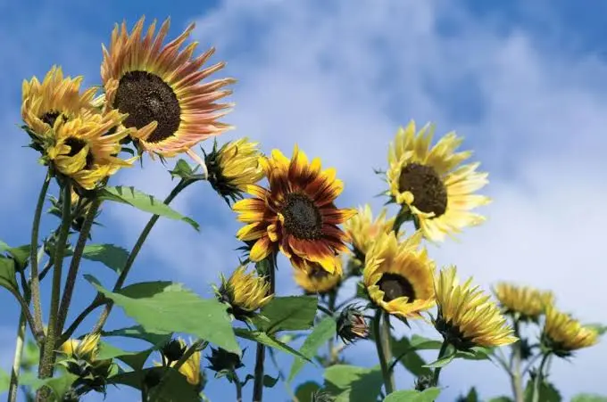
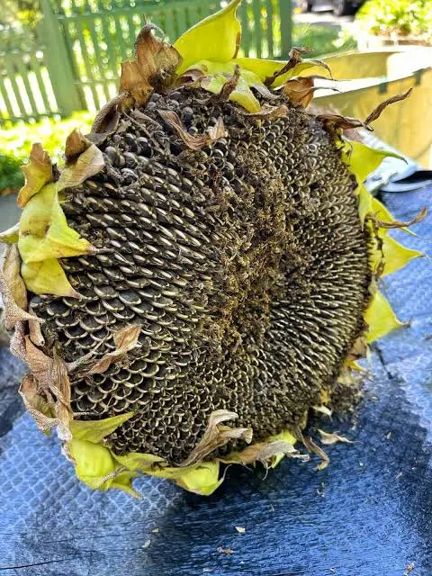
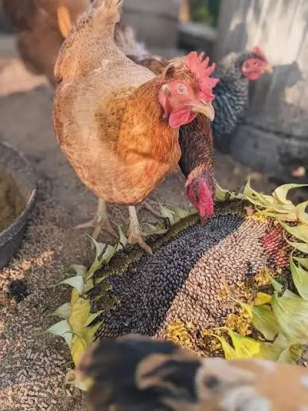

🌻 Can Chickens Eat Sunflower Seeds? Growing Sunflowers for Chickens
Yes, chickens can eat sunflower seeds as a supplemental food. Growing sunflowers for your flock can provide an energy-rich treat, a natural pecking enrichment activity, and a productive garden crop that also supports pollinators. This guide explains how to choose sunflower varieties, plant a seed crop, protect developing heads, harvest and dry the seeds, store them safely, and offer them to chickens appropriately.
🌻 Can Chickens Eat Sunflower Seeds?
Yes. Chickens can eat clean, plain sunflower seeds as a supplemental food. They may be offered whole with their hulls, shelled, cracked, coarsely ground, sprouted, or on a thoroughly dried sunflower head.
Most healthy adult chickens can eat whole raw sunflower seeds when appropriate insoluble grit is available. The seeds do not normally need to be cooked, and plain raw or naturally dried seeds are generally the most practical forms.
Chickens may also eat plain roasted sunflower seeds when they contain no salt, oils, flavorings, sweeteners, or seasonings. Human snack seeds are often salted or flavored and should not be given to the flock.
Practical sunflower feeding options include:
- Whole seeds with hulls: Suitable for most adult chickens, although the hull increases fiber.
- Shelled sunflower kernels: Easier to eat but more concentrated in fat and energy because the hull has been removed.
- Cracked or ground seed: May be mixed into measured supplemental foods but deteriorates faster during storage.
- Sprouted sunflower seed: Clean, untreated seed may be sprouted under sanitary conditions with good rinsing, drainage, airflow, and mold prevention.
- Whole dried heads: Mature, thoroughly dried heads can provide natural pecking enrichment.
Sunflower seeds are high in fat and energy but do not provide the complete amino-acid, calcium, vitamin, and mineral balance required by chickens. Never feed salted, seasoned, moldy, musty, damp, rancid, chemically treated, or otherwise contaminated sunflower seeds.
🌻 Are Sunflowers a Good Crop for Chickens?
Sunflowers are one of the most approachable feed-garden crops for beginning gardeners. They are direct-sown, grow rapidly in warm weather, attract pollinators, and produce seeds that chickens can eat as a supplemental source of energy and fat.
Mature seed heads can also provide enrichment. Instead of removing every seed, you can offer a thoroughly dried head and allow the flock to peck the seeds loose naturally.
Sunflowers are not a complete chicken feed. Their greatest value is as an occasional energy-rich supplement, a seasonal garden crop, and a dry seed that may be stored for later use.
Is This Crop Right for Your Flock and Backyard?
Crop success depends on more than whether chickens can eat it. Climate, growing space, sunlight, soil, water, labor, processing, equipment, harvest goals, and storage all affect whether it is a practical choice for your property.
🌱 Use the Feed Crop Planner →📋 Sunflower Quick Facts
🌱 Which Sunflowers Should You Grow for Chickens?
Not every sunflower is grown for the same purpose. Some varieties are bred mainly for flowers, while others are selected for oil or large edible seeds.
Black Oil Sunflowers
Black oil sunflower varieties produce relatively small, oil-rich seeds with thinner hulls than many large confection varieties.
They are commonly used in wild-bird mixes and are a logical choice when seed production for poultry is the primary goal.
Confection Sunflowers
Confection varieties produce the familiar larger striped seeds often sold for human snacking.
The larger seeds are easy to see and harvest, but they generally contain a greater proportion of hull than shelled kernels.
Ornamental Sunflowers
Ornamental varieties are selected mainly for flower color, branching habit, height, or cut-flower production.
Some produce usable seeds, but pollen-free or heavily branched ornamental hybrids may not be the best choice when seed yield is the main purpose.
Choose a named oilseed or seed-producing sunflower variety rather than assuming every decorative sunflower will produce a worthwhile feed harvest. Check the seed packet for mature height, days to maturity, branching habit, and whether the variety is intended for seed production.
🗓 When to Plant Sunflowers
Sunflowers are frost-sensitive warm-season plants. Direct sow them after the danger of frost has passed and the soil has warmed to approximately 60°F.
Planting in cold, wet soil can slow germination and increase the chance of seed decay or seedling loss. Short-season growers should select early-maturing varieties.
| Region | General Planting Approach | Likely Harvest Period |
|---|---|---|
| Cold North | Plant after the final spring frost when the soil has warmed. Select an early-maturing variety. | Late summer through early fall. |
| Midwest and Northeast | Direct sow during mid- to late spring after frost danger has passed. | Late summer through early fall. |
| Upper South | Plant in spring after frost. A second planting may mature where the warm season is long enough. | Summer through early fall. |
| Deep South | Plant earlier in spring once frost danger has passed. Try to avoid placing flowering and seed filling during the worst heat and drought. | Early summer through fall, depending on planting date. |
| Southwest | Plant after frost when irrigation is available. Time flowering to avoid extreme heat where possible. | Summer through fall. |
| Pacific Northwest | Plant after frost once the soil is warm. Choose shorter-season varieties in cool locations. | Late summer through early fall. |
| Coastal West | Plant once the soil has warmed. Mild areas may allow a longer planting window. | Summer through fall. |
These are broad regional guidelines. Your local frost dates, elevation, rainfall, and summer temperatures should determine your final planting date.
📐 How Much Space Do Sunflowers Need?
Large seed-producing sunflowers need more room than dwarf ornamental varieties. A practical starting point for substantial single-head plants is approximately:
- 12–15 inches between plants
- 24–36 inches between rows
- Full sun with minimal shading from nearby structures
Using midpoint spacing of approximately 13.5 inches between plants and 30 inches between rows gives a planning estimate of:
| Growing Area | Approximate Plants | Important Limitation |
|---|---|---|
| 10 square feet | About 4 plants | Best used as a small trial rather than a major feed crop. |
| 50 square feet | About 18 plants | Enough to evaluate production and harvesting effort. |
| 100 square feet | About 36 plants | Actual seed yield will vary substantially by variety and conditions. |
These figures estimate how many plants fit the area. They do not guarantee a particular number of pounds of harvested seed.
🌻 How Many Sunflowers Should You Grow for Chickens?
The number of sunflowers needed for your flock depends on whether you are growing them for enrichment, occasional supplementation, or a larger seasonal harvest. For most backyard chicken keepers, sunflowers are best viewed as a supplemental crop rather than a replacement for purchased feed.
A small planting can still provide value. Even a few mature sunflower heads can create a natural pecking activity for chickens, while larger plantings can provide more stored seed for later use.
| Flock Goal | Suggested Planting Approach | Expected Use |
|---|---|---|
| Small trial planting | 10–20 sunflowers | Learn how the crop performs and provide occasional enrichment. |
| Seasonal supplemental seed | Several dozen plants | Harvest and dry seed for occasional feeding throughout the year. |
| Large-scale supplementation | Requires dedicated growing space | Possible, but labor, wildlife protection, harvest, and storage become major factors. |
For many backyard flocks, the goal is not to replace a bag of feed with homegrown sunflower seed. The greatest value often comes from combining feed supplementation, enrichment, pollinator support, and the experience of growing food for your own animals.
🪴 How to Plant Sunflowers for Chicken Feed
- Choose a full-sun location. Select an area receiving at least six hours of direct sunlight, preferably more.
- Wait for warm soil. Plant after frost danger has passed and the soil is approximately 60°F or warmer.
- Prepare a well-drained seedbed. Remove weeds and loosen compacted soil. Sunflowers perform best where their roots can grow deeply.
- Sow approximately 1–2 inches deep. Use the shallower end of the range in heavier or cooler soil and slightly deeper planting where the surface dries rapidly.
- Water after planting. Keep the seed zone consistently moist, but not waterlogged, while germination occurs.
- Thin overcrowded seedlings. Retain the healthiest plants at the spacing appropriate for the mature variety.
- Protect young plants. Birds, rodents, rabbits, and other animals may remove seeds or damage seedlings before they establish.
💧 Watering and Fertility
Sunflowers are often described as drought tolerant after establishment, but drought can still reduce head size, seed filling, and total harvest.
Consistent moisture is especially helpful during:
- Germination and seedling establishment
- Rapid stem and leaf growth
- Flowering
- Seed development and filling
Water deeply enough to encourage root development rather than repeatedly wetting only the soil surface. Avoid keeping the root zone continuously saturated.
Sunflowers can grow vigorously in fertile soil, but excessive nitrogen may encourage tall leafy growth and weaker stems without guaranteeing better seed production. A soil test is preferable to adding fertilizer blindly.
🐝 Pollination and Seed Development
Sunflower heads contain many individual flowers. Bees and other pollinators improve fertilization and seed development.
Avoid applying insecticides to open flowers when pollinators are active. Poor pollination may produce heads with empty or poorly developed seed sections.
Planting several sunflowers together can make the crop more noticeable to pollinators, although even a small patch may receive substantial bee activity.
🐦 Protecting Sunflower Heads from Wild Birds
Wild birds often discover sunflower seeds before the gardener is ready to harvest them. This can turn a promising crop into a nearly empty head.
Once pollination is complete and seeds begin to develop, possible protection methods include:
- Lightweight mesh bags placed over individual heads
- Paper or breathable fabric covers that allow airflow
- Bird netting supported so it does not rest tightly against the heads
- Harvesting mature heads before extended wet weather or severe bird loss
Trapped moisture can encourage mold and decay. Any cover should allow ventilation and should not remain waterlogged after rain.
🔎 How to Tell When Sunflower Seeds Are Ready
Seed maturity occurs after flowering. Exact timing depends on variety, planting date, temperature, and growing conditions.
Common maturity signs include:
- The flower petals have dried and fallen
- The head begins to droop
- The back of the head changes from green toward yellow or brown
- The small florets covering the seeds dry and loosen
- The seeds appear full and have developed their mature color
- The seed shells feel firm rather than soft and watery
Seed maturity may occur roughly a month after flowering, but the plant and seed head should be judged directly rather than harvested only by calendar date.

✂️ How to Harvest Sunflower Heads
Harvesting sunflower heads at the correct stage helps preserve seed quality and reduces losses from moisture, mold, and wildlife. Mature heads can be dried, stored, and later offered to chickens as a supplemental feed source and enrichment activity.
- Inspect the entire head. Confirm that the seeds are filled and the back of the head is yellow-brown rather than green.
- Choose a dry day. Avoid harvesting immediately after heavy rain when the head and seeds are saturated.
- Cut the stalk below the head. Leave enough stalk to make hanging or handling the head easier.
- Move the heads under cover. Protect them from rain, nighttime condensation, rodents, and wild birds.
- Finish drying with strong airflow. Keep heads separated rather than stacking them in a damp pile.
- Remove the seeds if desired. Once fully dry, rub the seeds loose by hand or use another gentle method that does not crush them.
🌬 Drying Sunflower Seeds Safely
🌬 Drying Sunflower Seeds Safely
Sunflower heads and seeds must be thoroughly dry before they are placed in sealed storage. Damp seed may mold, heat, ferment, or become infested by insects.
For a small backyard harvest:
- Dry heads in a warm, shaded, well-ventilated location
- Keep the heads protected from rain and dew
- Avoid piling damp heads together
- Turn or reposition heads when necessary for even airflow
- Remove visibly damaged, insect-infested, or moldy material
- Do not seal seeds in a container while they still feel damp or warm
Commercial storage recommendations use measured grain-moisture targets, but most backyard growers will not own a calibrated moisture meter. When there is doubt about whether the seed is sufficiently dry, continue drying rather than sealing it prematurely.
🪣 Storing Homegrown Sunflower Seeds
Once the seeds are thoroughly dry, store them in a cool, dark, dry location inside a food-safe container that excludes rodents and insects.
Good storage practices include:
- Labeling the container with the crop and harvest date
- Keeping containers off damp floors
- Avoiding direct sunlight and excessive heat
- Checking periodically for condensation or heating
- Watching for insects, webbing, mold, or musty odors
- Discarding questionable seed rather than trying to salvage it
Because sunflower seeds contain substantial oil, they may eventually become rancid even when mold is not present. A sharp, stale, paint-like, or otherwise unpleasant odor is a reason not to feed them.
🐔 How Much Sunflower Seed Can Chickens Eat?
Sunflower seeds should be treated as a supplemental food rather than a replacement for a complete poultry ration. Because sunflower seeds are high in fat and energy, offering too much can reduce the amount of balanced feed chickens consume.
The appropriate amount depends on flock size, the type of sunflower seed offered, and what other supplemental foods are available. When introducing sunflower seeds for the first time, start with small amounts and observe how your chickens respond.
- Small backyard flocks: Offer small portions as an occasional treat or enrichment activity rather than a primary feed source.
- Whole seed heads: Use mature, fully dried heads as a pecking activity that allows chickens to naturally work for the seeds.
- Regular feeding: Keep sunflower seeds as a supplement while continuing to provide a complete poultry feed designed for your flock's age and purpose.

🐔 How to Feed Sunflowers to Chickens
Sunflowers can be offered as a supplemental feed in several forms, including whole dried seed heads, loose seeds, or prepared sunflower seed portions. Whole heads can also provide natural pecking enrichment.
Sunflowers can be offered in several forms:
- Whole, fully dried seed heads for pecking enrichment
- Loose whole seeds
- Cracked or coarsely ground seeds
- Shelled kernels
- Small amounts mixed with other appropriate supplemental foods
Adult chickens can generally manage whole sunflower seeds. Shelled kernels are more concentrated because the fibrous hull has been removed.
They should not displace so much complete feed that the flock’s intake of protein, amino acids, calcium, vitamins, and minerals becomes diluted. Laying hens should continue to receive an appropriately formulated layer ration and access to suitable calcium.
🥗 Sunflower Nutrition for Chickens
Whole oilseed sunflower seed is commonly reported at approximately:
| Nutritional Measure | Approximate Value | Why It Matters |
|---|---|---|
| Crude protein | About 20% | Moderate protein, but not a complete poultry amino-acid profile. |
| Fat | About 40% | Makes the seed highly energy-dense. |
| Fiber | Can approach about 29% in whole seed | The hull raises fiber and lowers usable nutrient concentration. |
Values vary by sunflower type, hull percentage, growing conditions, and processing. Whole seeds, shelled kernels, sunflower meal, and extracted sunflower oil should not be treated as the same feed ingredient.
Sunflower seeds may also contribute vitamin E, phosphorus, magnesium, selenium, and unsaturated fatty acids, but they do not provide the complete mineral balance needed by laying hens.
⚠️ Sunflower Feeding and Safety Limitations
- Do not feed moldy, damp, musty, fermented, or rancid seed.
- Do not use heavily salted or seasoned human snack seeds.
- Do not assume sunflower seeds provide enough calcium for laying hens.
- Do not replace a complete feed simply because sunflower seeds contain moderate protein.
- Remember that shelled kernels are more concentrated in fat than whole seeds.
- Introduce unfamiliar supplemental foods gradually and watch flock consumption.
- Discard seed exposed to unsafe pesticides, chemicals, rodents, or contaminated storage areas.
🐛 Common Sunflower Problems
| Problem | What You May Notice | Possible Response |
|---|---|---|
| Poor germination | Missing seedlings or seeds disappearing | Wait for warm soil, avoid waterlogged planting conditions, and protect seed from birds and rodents. |
| Weak or leaning stalks | Tall plants bending after wind or rain | Use appropriate spacing, avoid excessive nitrogen, and stake unusually tall varieties where necessary. |
| Empty seed areas | Sections of the head do not fill properly | Encourage pollinators and avoid insecticide exposure during flowering. |
| Wild-bird losses | Seeds disappear before harvest | Use breathable head covers or supported bird netting after pollination. |
| Mold during drying | Musty odor, discoloration, soft tissue, or fuzzy growth | Increase airflow, keep heads dry and separated, and discard affected material. |
| Stored-seed insects | Webbing, holes, dust, or moving insects | Remove contaminated material, clean the storage area, and use clean sealed containers for future harvests. |
📊 Are Sunflowers Worth Growing for Chicken Feed?
Sunflowers may be worthwhile when you value more than the market price of the harvested seed.
Possible benefits include:
- Chicken enrichment
- Pollinator support
- Garden appearance
- Shade or seasonal screening
- Cut flowers
- Seed-saving experience
- A dry crop that may be stored
- A useful learning crop for children or beginning gardeners
However, purchased sunflower seed is often inexpensive relative to the labor involved in protecting, harvesting, drying, threshing, and storing a small crop.
For many backyard growers, sunflowers are best viewed as a multipurpose garden crop that provides some chicken food—not as a dependable way to replace a large portion of purchased feed.
Black oil sunflower seeds are often a practical choice for backyard chicken keepers because they are oil-rich, relatively small, and commonly used as a bird feed ingredient. They can provide valuable energy and fat, especially during colder months or periods when extra calories are useful.
Larger striped or confection sunflower seeds can also be fed to chickens, but they generally contain a greater proportion of hull compared with the edible kernel. The best choice depends on whether your goal is maximum seed production, easy harvesting, chicken enrichment, or simply growing a multipurpose garden crop.
- Black oil sunflower: Often preferred when the primary goal is producing energy-rich feed seed.
- Striped/confection sunflower: Edible and useful, but commonly selected more for human consumption or larger seeds.
- Ornamental sunflower: May provide seeds, but seed yield and consistency vary by variety.
🌻 A Simple Beginner Sunflower Plan
For a first attempt, plant approximately 10–20 oilseed sunflowers in a sunny block or row.
- Choose one named seed-producing variety.
- Plant after frost in warm soil.
- Thin to the recommended mature spacing.
- Protect the seedlings from animals.
- Cover several heads after pollination to reduce bird losses.
- Harvest and dry the heads separately.
- Offer one fully dried head to the flock as enrichment.
- Store the remaining clean seed and monitor its condition.
This trial will show how sunflowers perform in your soil and climate before you dedicate a larger garden area to them.
❓ Frequently Asked Questions
Can chickens eat sunflower seeds?
Yes. Adult chickens can eat clean, plain sunflower seeds as a supplemental food. Whole seeds, shelled kernels, and thoroughly dried sunflower heads may all be offered in moderation alongside a complete poultry ration.
Can chickens eat sunflower seeds with the shells?
Yes. Most healthy adult chickens can consume whole sunflower seeds with their hulls when appropriate insoluble grit is available. Whole seeds contain more fiber than shelled kernels.
Can chickens eat shelled sunflower seeds?
Yes. Shelled sunflower kernels are easy for chickens to eat, but they are more concentrated in fat and energy because the fibrous hull has been removed. Offer them in smaller amounts than whole seeds.
Can chickens eat black oil sunflower seeds?
Yes. Black oil sunflower seeds are commonly used for birds because they are oil rich and have relatively thin hulls. They are a practical supplemental seed for chickens but should not replace complete poultry feed.
Are black oil sunflower seeds better than striped sunflower seeds for chickens?
Black oil sunflower seeds are often preferred when the goal is producing an energy-rich feed seed because they contain substantial oil and have thinner hulls. Striped or confection seeds are also edible but generally have larger hulls and are commonly selected for human snack use.
Do sunflower seeds need to be cooked for chickens?
No. Clean, mature sunflower seeds do not normally need to be cooked for adult chickens. Plain raw or naturally dried seeds are generally the most practical forms.
Can chickens eat roasted sunflower seeds?
Yes, but only when they are plain and unsalted. Do not feed sunflower seeds prepared with salt, oils, flavorings, sweeteners, spices, or other seasonings.
Can chickens eat sprouted sunflower seeds?
Yes. Clean, untreated sunflower seeds may be sprouted under sanitary conditions and offered as supplemental green feed. Maintain good rinsing, drainage, and airflow, and discard sprouts that develop mold, slime, discoloration, fermentation, or unpleasant odors.
Can baby chicks eat sunflower seeds?
Baby chicks should receive a complete chick starter feed as their primary diet. Supplemental sunflower seed is better reserved for older birds unless it is appropriately processed and included in a professionally formulated starter ration. Chicks given supplemental foods also need suitably sized grit.
Can chickens eat an entire sunflower head?
Yes. A mature, thoroughly dried sunflower head can provide natural pecking enrichment. It must be clean, untreated, and free from mold, insects, rodents, rancidity, and other contamination.
Can chickens eat sunflower petals?
Chickens may peck clean sunflower petals as occasional enrichment. Petals provide much less concentrated nutrition than mature seeds and should not be treated as a major feed source.
Can chickens eat sunflower leaves and stalks?
Chickens may investigate or peck sunflower leaves and tender plant material, but mature stalks are fibrous and have little concentrated feed value. Do not offer plants treated with unsafe pesticides, herbicides, or other chemicals.
Are sunflowers safe for chickens?
Yes. Clean sunflower seeds and untreated plant material are generally safe when offered appropriately. Avoid moldy, damp, rancid, salted, seasoned, chemically treated, or otherwise contaminated sunflower products.
Can chickens eat sunflower seeds every day?
Small amounts may be offered regularly, but sunflower seeds are high in fat and energy. Feeding too much can reduce the flock’s intake of complete poultry feed and dilute the overall nutritional balance.
Can sunflower seeds replace scratch grain?
Sunflower seeds may be used as one supplemental ingredient, but both sunflower seeds and scratch grains can dilute a complete diet when fed excessively. Neither should become the foundation of the flock’s feeding program.
Can sunflower seeds replace layer feed?
No. Sunflower seeds provide fat, energy, and moderate protein but do not supply enough calcium or the complete amino-acid, vitamin, and mineral balance required by laying hens.
Can chickens eat moldy or rancid sunflower seeds?
No. Do not feed seeds that are moldy, musty, damp, heated, rancid, insect-infested, chemically treated, or contaminated by rodents. A sharp, stale, paint-like, or otherwise unpleasant odor may indicate rancidity.
How long does it take to grow sunflowers for chicken feed?
Most sunflower varieties mature in approximately 60 to 120 days, depending on the variety, planting date, climate, and growing conditions. Seed-producing oilseed types may require a longer season than some ornamental varieties.
How should sunflower heads be dried for chickens?
Harvest mature heads after the back has turned yellow-brown and the seeds are firm. Finish drying them under cover in a warm, shaded, well-ventilated location before feeding or storage.
Will growing sunflowers noticeably lower my chicken feed bill?
Possibly, but the result depends on planted area, seed yield, wildlife losses, labor, drying, storage success, and local feed prices. Small plantings are more likely to provide enrichment and modest supplementation than major feed-cost savings.
🌱 Explore More Feed Crops
🧰 Helpful Chicken Planning Tools
📚 Research Sources
This guide was developed using university Extension publications, poultry-feed references, government nutrient resources, and the structured Backyard Chicken Planner feed-crop database.
Used for planting timing, soil temperature, planting depth, spacing, and home-garden cultivation.
Used for poultry-feed context and the role of sunflower seed as a supplemental ingredient.
Used for approximate whole sunflower seed protein, fat, and fiber values.
Used for general micronutrient context for sunflower kernels.